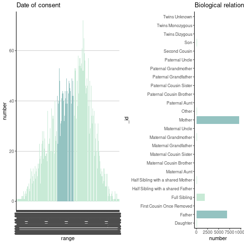
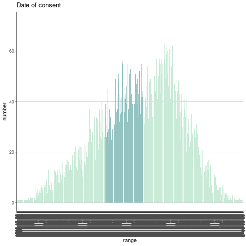
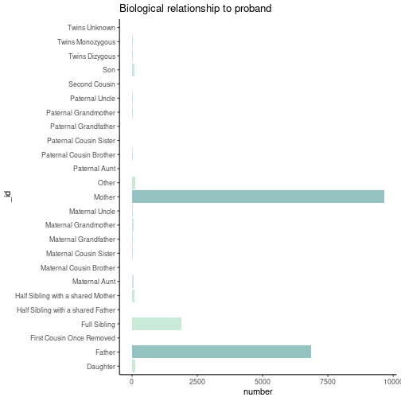

cloudos R package makes it easy to interact with Lifebit’s CloudOS https://cloudos.lifebit.ai/ platform in the R environment.
Installation
You can install the released version of cloudos from GitHub at this moment. (Will be listed on CRAN as well)
if (!require(remotes)) { install.packages("remotes") }
remotes::install_github("lifebit-ai/cloudos")Usage
Bellow are given the demonstration of how the cloudos package can be used.
Load the library
library(cloudos)
#>
#> Welcome to Lifebit's CloudOS R client
#> For Documentation visit - http://lifebit-ai.github.io/cloudos
#> This package is under activate development. If you found any issues,
#> Please reach out here - https://github.com/lifebit-ai/cloudos/issues
library(knitr) # For better visualization of wide dataframes in this README examples
library(magrittr) # For pipeConfigure CloudOS
The cloudos functions will be need set of cloudos configurations for able to connect to API. Lets see different ways of R package will try to find those configurations.
- From Environment variable
- From cloudos configuration file
First thing this R-package will look for environment variables - CLOUDOS_BASEURL, CLOUDOS_TOKEN, CLOUDOS_TEAMID and if not found it will try to read from ~/.cloudos/config.
Three ways to set cloudos environment variables
- Add them to
~/.Renviron, which will load the environment variables on beginning of the R-session - Add them using
Sys.setenv(ENV_VAR = "env_var_value") - Use the function
cloudos_configure(), which will create a~/.cloudos/config(Recommended way if you using multiple cloudos clients)
Application - Cohort Browser
Cohort Browser is part of Lifebit’s cloudos offering. Lets explore how to interact with this in R environment.
List Cohorts
To check list of available cohorts in a workspace.
cohorts <- cb_list_cohorts()
#> Total number of cohorts found-78. But here shows-10 as default. For more, change size = 78 to get all.
cohorts %>% head(n=5) %>% kable()| id | name | description | number_of_participants | number_of_filters | created_at | updated_at |
|---|---|---|---|---|---|---|
| 5fd9da48e3da655a4836e0aa | damian3 | 44667 | 0 | 2020-12-16T09:58:32.942Z | 2020-12-16T09:58:32.942Z | |
| 5fd8c234e34ec6186fe45d35 | Test Alberto 53 | Test description | 4 | 11 | 2020-12-15T14:03:32.394Z | 2020-12-16T17:01:27.225Z |
| 5fd88a13afc7200a2965d282 | Test Alberto 52 | Test description | 2884 | 2 | 2020-12-15T10:04:03.684Z | 2020-12-15T10:04:03.684Z |
| 5fd88972fb156109dbf8b9d4 | Test Alberto 51 | Test description | 2884 | 2 | 2020-12-15T10:01:22.801Z | 2020-12-15T10:01:22.801Z |
| 5fd888db775c6a099fdf6636 | Test Alberto 50 | Test description | 2884 | 2 | 2020-12-15T09:58:51.433Z | 2020-12-15T09:58:51.433Z |
Create a cohort
To create a new cohort.
my_cohort <- cb_create_cohort(cohort_name = "Cohort-R",
cohort_desc = "This cohort is for testing purpose, created from R.")
my_cohortGet a cohort
Get a available cohort in to a cohort R object. This cohort object can be used in many different other functions.
my_cohort <- cb_load_cohort(cohort_id = "5f9af3793dd2dc6091cd17cd")
my_cohort
#> Cohort ID: 5f9af3793dd2dc6091cd17cd
#> Cohort Name: cb_demo_new
#> Cohort Description:
#> Number of filters applied: 2Get samples table
Get all the samples (participants) table for a cohort with phenotypic filters applied.
cohort_samples <- cb_get_samples_table(cohort = my_cohort)
cohort_samples %>% head(n=5) %>% kable()| EID | Programme | Year of birth | Participant ethnic category | Participant karyotypic sex | Participant type | Acute flag | Biological relationship to proband |
|---|---|---|---|---|---|---|---|
| 1000020 | Rare Diseases | 1970 | Not Stated | Unknown | Relative | Mother | NULL |
| 1000522 | Rare Diseases | 1990 | White: Any other White background | Not Supplied | Relative | Mother | NULL |
| 100079 | Rare Diseases | 1967 | White: British | Not Supplied | Relative | Mother | NULL |
| 100084 | Rare Diseases | 1953 | Other Ethnic Groups: Any other ethnic group | Not Supplied | Relative | Mother | NULL |
| 1001429 | Rare Diseases | 1981 | White: British | Not Supplied | Relative | Mother | NULL |
Get genotypic table
Get all the genotypic table for a cohort.
#cohort_genotype <- cb_get_genotypic_table(my_cohort)
cohort_genotype <- cb_get_genotypic_table(cohort = my_cohort)
#> Total number of rows found 805357 You can use 'size' to mention how many rows you want to extract. Default size = 10
cohort_genotype %>% head(n=5) %>% kable()| Chromosome | Location | Reference | Alternative | Affimetrix ID | Possible allele combination 0 | Possible allele combination 1 | Possible allele combination 2 | index | Type | id | cn | NA | NA.1 | NA.2 | NA.3 | NA.4 | NA.5 | NA.6 | NA.7 | NA.8 | NA.9 | NA.10 | NA.11 | NA.12 | NA.13 | NA.14 | NA.15 | NA.16 | NA.17 | NA.18 | NA.19 | NA.20 | NA.21 | NA.22 | NA.23 | NA.24 | NA.25 | NA.26 | NA.27 | NA.28 | NA.29 | NA.30 | NA.31 | NA.32 | NA.33 | NA.34 | NA.35 | NA.36 | NA.37 |
|---|---|---|---|---|---|---|---|---|---|---|---|---|---|---|---|---|---|---|---|---|---|---|---|---|---|---|---|---|---|---|---|---|---|---|---|---|---|---|---|---|---|---|---|---|---|---|---|---|---|
| 10 | 10:93190 | AC | 80278591 | GAC G | 0 0 | G GAC | 0 | Insertion | 1 | zzg_m_10_0 | NA | NA | NA | NA | NA | NA | NA | NA | NA | NA | NA | NA | NA | NA | NA | NA | NA | NA | NA | NA | NA | NA | NA | NA | NA | NA | NA | NA | NA | NA | NA | NA | NA | NA | NA | NA | NA | NA | |
| 10 | 10:93502 | C | G | 52134431 | C C | 0 0 | G C | 1 | SNP | 2 | zzg_m_10_1 | rs201177578 | Deleterious | Possibly Damaging | Possibly Damaging | Unknown | Disease Causing | Medium | Deleterious | Deleterious | Tolerated | Deleterious | 542 | 244 | GO CYTOSKELETON ORGANIZATION| GO OOGENESIS| GO MICROTUBULE BASED PROCESS| GO MICROTUBULE CYTOSKELETON ORGANIZATION| GO SEXUAL REPRODUCTION| GO ATOMICAL STRUCTURE MATURATION| GO MITOTIC CELL CYCLE| GO ORGANELLE FISSION| GO CELL MATURATION| GO ORGANELLE ASSEMBLY| GO CELLULAR PROCESS INVOLVED IN REPRODUCTION IN MULTICELLULAR ORGANISM| GO OOCYTE MATURATION| GO OOCYTE DIFFERENTIATION| GO MEIOTIC CELL CYCLE| GO CELL CYCLE| GO MULTI ORGANISM REPRODUCTIVE PROCESS| GO GAMETE GENERATION| GO FEMALE GAMETE GENERATION| GO DEVELOPMENTAL PROCESS INVOLVED IN REPRODUCTION| GO MEIOTIC CELL CYCLE PROCESS| GO SPINDLE ASSEMBLY| GO REPRODUCTION| GO GERM CELL DEVELOPMENT| GO MULTICELLULAR ORGANISM REPRODUCTION| GO DEVELOPMENTAL MATURATION| GO CELL CYCLE PROCESS| GO MICROTUBULE CYTOSKELETON| GO CYTOSKELETAL PART| GO MICROTUBULE| GO SPINDLE| GO GTPASE ACTIVITY| GO HYDROLASE ACTIVITY ACTING ON ACID ANHYDRIDES| GO GUANYL NUCLEOTIDE BINDING| GO RIBONUCLEOTIDE BINDING| GO STRUCTURAL CONSTITUENT OF CYTOSKELETON| GO STRUCTURAL MOLECULE ACTIVITY| GO MEIOTIC SPINDLE ORGANIZATION| GO SPINDLE ORGANIZATION| GO FEMALE MEIOTIC NUCLEAR DIVISION| GO SPINDLE ASSEMBLY INVOLVED IN MEIOSIS| GO MEIOTIC SPINDLE| GO SUPRAMOLECULAR COMPLEX| GO POLYMERIC CYTOSKELETAL FIBER | TUBB8 | TUBB8:NM 177987:exon4:cG830C:pG277A | 0.002 | 0.787 | 0.598 | 0.001 | 1 | 2.155 | -1.84 | -4.65 | 0.41 | 0.877 | -0.012 | 0.561 | NA | NA | NA | NA | NA | NA | NA | NA | NA | NA |
| 10 | 10:93635 | T | C | 3729558 | T T | 0 0 | C T | 2 | SNP | 3 | zzg_m_10_2 | rs200242637 | Deleterious | Benign | Benign | Unknown | Disease Causing | Medium | Tolerated | Deleterious | Tolerated | Tolerated | 615 | 27 | GO CYTOSKELETON ORGANIZATION| GO OOGENESIS| GO MICROTUBULE BASED PROCESS| GO MICROTUBULE CYTOSKELETON ORGANIZATION| GO SEXUAL REPRODUCTION| GO ATOMICAL STRUCTURE MATURATION| GO MITOTIC CELL CYCLE| GO ORGANELLE FISSION| GO CELL MATURATION| GO ORGANELLE ASSEMBLY| GO CELLULAR PROCESS INVOLVED IN REPRODUCTION IN MULTICELLULAR ORGANISM| GO OOCYTE MATURATION| GO OOCYTE DIFFERENTIATION| GO MEIOTIC CELL CYCLE| GO CELL CYCLE| GO MULTI ORGANISM REPRODUCTIVE PROCESS| GO GAMETE GENERATION| GO FEMALE GAMETE GENERATION| GO DEVELOPMENTAL PROCESS INVOLVED IN REPRODUCTION| GO MEIOTIC CELL CYCLE PROCESS| GO SPINDLE ASSEMBLY| GO REPRODUCTION| GO GERM CELL DEVELOPMENT| GO MULTICELLULAR ORGANISM REPRODUCTION| GO DEVELOPMENTAL MATURATION| GO CELL CYCLE PROCESS| GO MICROTUBULE CYTOSKELETON| GO CYTOSKELETAL PART| GO MICROTUBULE| GO SPINDLE| GO GTPASE ACTIVITY| GO HYDROLASE ACTIVITY ACTING ON ACID ANHYDRIDES| GO GUANYL NUCLEOTIDE BINDING| GO RIBONUCLEOTIDE BINDING| GO STRUCTURAL CONSTITUENT OF CYTOSKELETON| GO STRUCTURAL MOLECULE ACTIVITY| GO MEIOTIC SPINDLE ORGANIZATION| GO SPINDLE ORGANIZATION| GO FEMALE MEIOTIC NUCLEAR DIVISION| GO SPINDLE ASSEMBLY INVOLVED IN MEIOSIS| GO MEIOTIC SPINDLE| GO SUPRAMOLECULAR COMPLEX| GO POLYMERIC CYTOSKELETAL FIBER | TUBB8 | TUBB8:NM 177987:exon4:cA697G:pM233V | 0.012 | 0.01 | 0.043 | 0 | 1 | 2.105 | -0.18 | -3.33 | 0.098 | 0.713 | -0.829 | 0.183 | 0.0279 | 0.0174 | 0.0196 | 0.04 | 0.0194 | 0.0573 | 0.028 | 0.0461 | NA | NA |
| 10 | 10:94514 | CTGG | 52349171 | CCTGG CCT | C CCTGG | 0 0 | 3 | Insertion | 4 | zzg_m_10_3 | NA | NA | NA | NA | NA | NA | NA | NA | NA | NA | NA | NA | NA | NA | NA | NA | NA | NA | NA | NA | NA | NA | NA | NA | NA | NA | NA | NA | NA | NA | NA | NA | NA | NA | NA | NA | NA | NA | |
| 10 | 10:94693 | G | 80278592 | AG | 0 0 | A A | 4 | SNP | 5 | zzg_m_10_4 | NA | NA | NA | NA | NA | NA | NA | NA | NA | NA | NA | NA | NA | GO CYTOSKELETON ORGANIZATION| GO OOGENESIS| GO MICROTUBULE BASED PROCESS| GO MICROTUBULE CYTOSKELETON ORGANIZATION| GO SEXUAL REPRODUCTION| GO ATOMICAL STRUCTURE MATURATION| GO MITOTIC CELL CYCLE| GO ORGANELLE FISSION| GO CELL MATURATION| GO ORGANELLE ASSEMBLY| GO CELLULAR PROCESS INVOLVED IN REPRODUCTION IN MULTICELLULAR ORGANISM| GO OOCYTE MATURATION| GO OOCYTE DIFFERENTIATION| GO MEIOTIC CELL CYCLE| GO CELL CYCLE| GO MULTI ORGANISM REPRODUCTIVE PROCESS| GO GAMETE GENERATION| GO FEMALE GAMETE GENERATION| GO DEVELOPMENTAL PROCESS INVOLVED IN REPRODUCTION| GO MEIOTIC CELL CYCLE PROCESS| GO SPINDLE ASSEMBLY| GO REPRODUCTION| GO GERM CELL DEVELOPMENT| GO MULTICELLULAR ORGANISM REPRODUCTION| GO DEVELOPMENTAL MATURATION| GO CELL CYCLE PROCESS| GO MICROTUBULE CYTOSKELETON| GO CYTOSKELETAL PART| GO MICROTUBULE| GO SPINDLE| GO GTPASE ACTIVITY| GO HYDROLASE ACTIVITY ACTING ON ACID ANHYDRIDES| GO GUANYL NUCLEOTIDE BINDING| GO RIBONUCLEOTIDE BINDING| GO STRUCTURAL CONSTITUENT OF CYTOSKELETON| GO STRUCTURAL MOLECULE ACTIVITY| GO MEIOTIC SPINDLE ORGANIZATION| GO SPINDLE ORGANIZATION| GO FEMALE MEIOTIC NUCLEAR DIVISION| GO SPINDLE ASSEMBLY INVOLVED IN MEIOSIS| GO MEIOTIC SPINDLE| GO SUPRAMOLECULAR COMPLEX| GO POLYMERIC CYTOSKELETAL FIBER | TUBB8 | NA | NA | NA | NA | NA | NA | NA | NA | NA | NA | NA | NA | NA | NA | NA | NA | NA | NA | NA | NA | NA | NA | NA |
Explore Filters
Search phenotypic filters
Search for phenotypic filters based on a term.
all_filters <- cb_search_phenotypic_filters(term = "cancer")
#> Total number of phenotypic filters found - 4
all_filters %>% head(n=5) %>% kable()| bucket500 | bucket1000 | bucket2500 | bucket5000 | bucket300 | bucket10000 | categoryPathLevel1 | categoryPathLevel2 | id | instances | name | type | Sorting | valueType | units | coding | description | descriptionParticipantsNo | link | array | descriptionStability | descriptionCategoryID | descriptionItemType | descriptionStrata | descriptionSexed | orderPhenotype | instance0Name | instance1Name | instance2Name | instance3Name | instance4Name | instance5Name | instance6Name | instance7Name | instance8Name | instance9Name | instance10Name | instance11Name | instance12Name | instance13Name | instance14Name | instance15Name | instance16Name |
|---|---|---|---|---|---|---|---|---|---|---|---|---|---|---|---|---|---|---|---|---|---|---|---|---|---|---|---|---|---|---|---|---|---|---|---|---|---|---|---|---|---|---|
| FALSE | FALSE | FALSE | FALSE | FALSE | FALSE | Cancer | Participant disease | 177 | 1 | Cancer disease sub type | bars | Categorical multiple | The subtype of the cancer in question, recorded against a limited set of supplied enumerations. | 17404 | https://cnfl.extge.co.uk/pages/viewpage.action?pageId=147659370 | 4 | Main 100k Programme | |||||||||||||||||||||||||
| FALSE | FALSE | FALSE | FALSE | FALSE | FALSE | Cancer | Participant disease | 178 | 1 | Cancer disease type | bars | Categorical multiple | The cancer type of the tumour sample submitted to Genomics England. | 17404 | https://cnfl.extge.co.uk/pages/viewpage.action?pageId=147659370 | 4 | Main 100k Programme | |||||||||||||||||||||||||
| FALSE | FALSE | FALSE | FALSE | FALSE | FALSE | Cancer | Participant Tumour | 190 | 1 | Cancer tumour sk | text_search | Text | Database identifier for a participant’s registered tumour | 9561 | https://cnfl.extge.co.uk/pages/viewpage.action?pageId=147659370 | 5 | Main 100k Programme | |||||||||||||||||||||||||
| FALSE | FALSE | FALSE | FALSE | FALSE | FALSE | Cancer | Participant Tumour | 272 | 1 | Pancreatic cancer clinical stage | bars | Categorical multiple | COSD UG14560, UPPER GI - STAGING - PANCREAS. Description: ’Clinically agreed stage based on radiological findings of tumour extent in order to offer treatment recommendations. The category selected depends on tumour location within the pancreas and the arterial or venous involvement. | 9561 | https://cnfl.extge.co.uk/pages/viewpage.action?pageId=147659370 | 5 | Main 100k Programme |
Lets choose one filter from above table
# apply this first row filter
my_phenotypic_filter <- all_filters[1,]
my_phenotypic_filter %>% kable()| bucket500 | bucket1000 | bucket2500 | bucket5000 | bucket300 | bucket10000 | categoryPathLevel1 | categoryPathLevel2 | id | instances | name | type | Sorting | valueType | units | coding | description | descriptionParticipantsNo | link | array | descriptionStability | descriptionCategoryID | descriptionItemType | descriptionStrata | descriptionSexed | orderPhenotype | instance0Name | instance1Name | instance2Name | instance3Name | instance4Name | instance5Name | instance6Name | instance7Name | instance8Name | instance9Name | instance10Name | instance11Name | instance12Name | instance13Name | instance14Name | instance15Name | instance16Name |
|---|---|---|---|---|---|---|---|---|---|---|---|---|---|---|---|---|---|---|---|---|---|---|---|---|---|---|---|---|---|---|---|---|---|---|---|---|---|---|---|---|---|---|
| FALSE | FALSE | FALSE | FALSE | FALSE | FALSE | Cancer | Participant disease | 177 | 1 | Cancer disease sub type | bars | Categorical multiple | The subtype of the cancer in question, recorded against a limited set of supplied enumerations. | 17404 | https://cnfl.extge.co.uk/pages/viewpage.action?pageId=147659370 | 4 | Main 100k Programme |
Apply phenotypic filter
We can get statistic of sample numbers in a cohort for which a filter is applied.
# phenotype filter
cohort_with_filters <- cb_get_filter_statistics(cohort = my_cohort,
filter_id = my_phenotypic_filter$id)
cohort_with_filters %>% head(n=10) %>% kable()| _id | number | total |
|---|---|---|
| (All) Acute Lymphoblastic Leukaemia | 46 | 4449 |
| (Aml) Acute Myeloid Leukaemia | 55 | 4449 |
| Acral Lentiginous | 1 | 4449 |
| Adamantinoma Of Bone | 7 | 4449 |
| Adenocarcinoma | 982 | 4449 |
| Anaplastic Astrocytoma | 11 | 4449 |
| Anaplastic Oligodendroglioma | 5 | 4449 |
| Angiosarcoma | 3 | 4449 |
| Biliary Adenocarcinoma | 1 | 4449 |
| Carcinosarcoma | 12 | 4449 |
We can get number of total participants after applying a filter.
# filter participants
total_participants_with_filter <- cb_filter_participants(cohort = my_cohort,
filter_id = my_phenotypic_filter$id)
total_participants_with_filter
#> $total
#> [1] 44667
#>
#> $count
#> [1] 0Apply and Save a filter
Save a filter into the database.
For this a filter_query is required.
filter_query is a list of different phenotypic filter quires.
Steps to find phenotypic filters -
- Use
cb_search_phenotypic_filters()to find a filter based on a term. - At this time you will be having phenotypic filter id of your choice.
- Check the available filter values/range using
cb_get_filter_statistics() - Now use this information to make your
filter_query
There are two possible type of filter_query
- Range based
- Value based
Range based
For filter_id = 22
# A tibble: 1,880 x 3
`_id` number total
<chr> <int> <int>
1 1938-12-25 1 44660
2 1998-07-07 1 44660
3 2000-12-04 1 44660
4 2003-12-24 1 44660
5 2004-07-20 1 44660
6 2004-10-21 1 44660
7 2004-11-01 1 44660
8 2004-11-03 1 44660
9 2005-01-07 1 44660
10 2005-02-27 1 44660
# … with 1,870 more rowsTo make a range based query - filter_query = list("22" = list("from" = "2015-05-13", "to" = "2016-04-29")
Here "22" is the filter_id and you need to provide the range as a list with from and to.
Value based
For filter_id = 50
# A tibble: 25 x 3
`_id` number total
<chr> <int> <int>
1 Daughter 135 19187
2 Father 6864 19187
3 First Cousin Once Removed 11 19187
4 Full Sibling 1876 19187
5 Half Sibling with a shared Father 4 19187
6 Half Sibling with a shared Mother 79 19187
7 Maternal Aunt 49 19187
8 Maternal Cousin Brother 12 19187
9 Maternal Cousin Sister 34 19187
10 Maternal Grandfather 36 19187
11 Maternal Grandmother 68 19187
12 Maternal Uncle 27 19187
13 Mother 9649 19187
14 Other 114 19187To make a value based query <- filter_query = list("50" = c("Father", "Mother"))
Here "50" is filter_id and c("Father", "Mother") is a vector of values.
If you have multiple filter_query you can combine them with separated by a coma , inside the list. Such as filter_query = list(filter_query_1, filter_query_2)
Check the bellow example for the complete function call.
cb_apply_filter(cohort = my_cohort,
filter_query = list("22" = list("from" = "2015-05-13", "to" = "2016-04-29"),
"50" = c("Father", "Mother")))Get sample filters plot (experimental)
Get ggplots for all the applied phenotypic filters for a cohort.
As this based on ggplot objects, this can be customised further.
plot_list <- cb_plot_filters(cohort = my_cohort)
#> Warning: Ignoring unknown parameters: binwidth, bins, pad
library(ggpubr)
#> Loading required package: ggplot2
ggpubr::ggarrange(plotlist = plot_list)
Individual plots
plot_list[[1]]
plot_list[[2]]
Covert ggplot objects to plotly elements (just for demonstration purpose, in markdown plotly don’t support.)
p1 <- plotly::ggplotly(plot_list$filter_id_34)
p1
p2 <- plotly::ggplotly(plot_list$filter_id_2345)
p2Additional notes
This package is under activate development. If you found any issues, Please reach out here - https://github.com/lifebit-ai/cloudos/issues
For Documentation visit - http://lifebit-ai.github.io/cloudos
License
MIT © Lifebit